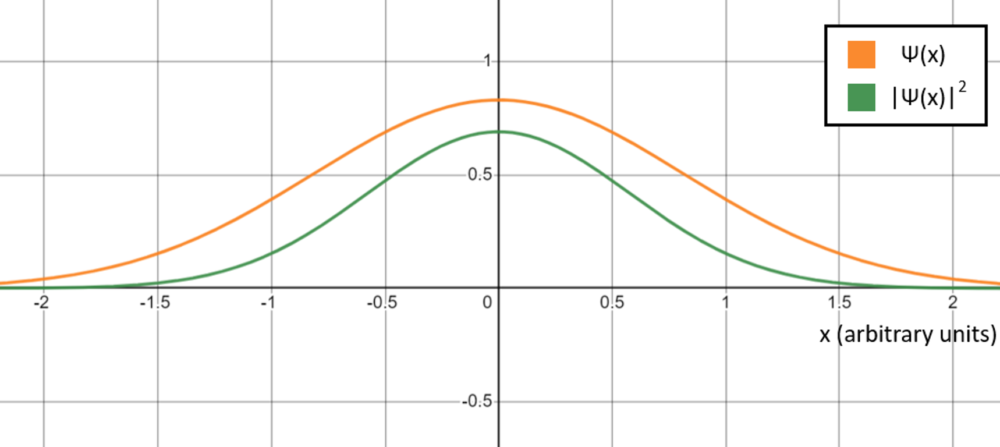

Contents
- Nuclear fusion
- Energy barriers
- On the Earth
- In the Sun
- Proton Proton chain
- Electron Tunneling
Nuclear fusion
Nuclear Fusion is the reaction in which 2 or more atomic nuclei are combined to form another different atomic nuclei and sub atomic particles (neutrons or protons).

Nuclear fusion can occur in elements below Fe-56. From the graph below on can notice that the average binding energy per nucleon is increasing until Fe-56, this means that any reaction that causes molecules lighter molecules to fuse towards Fe-56 would be more stable. The energy released in these converted from the mass defect (\(\delta m\)).
Where:
\[\delta m = \frac{E}{mc^2}.\]
Energy Barriers
An energy barrier is the minimum amount of energy required to cause the reaction. Every reaction like physical or chemical, has an energy barrier. An example of a chemical energy barrier would be the combustion reaction of propane. An example of a physical energy barrier would be hitting a egg hard enough to break it.

The above graph is a energy digram of a reaction and it is commonly used to represent chemical reactions. a) represents a exothermic reaction while b) represents an endothermic reaction. \(E_a\) represents the activation energy which is analogous to the energy barrier. Nuclear Fusion reactions are considered exothermic reactions as they release energy.
Coloumb Forces

In Nuclear Fusion, the energy barrier is represented by Coloumb Forces. They are the electrostatic forces of repulsion found between the 2 positively charged nuclei. Naturally 2 negatively charged nuclei would repel and as such be as far apart from each other as possible. Energy must be input into the system to bring the like charges together.
The Coloumb forces and the potential energy can be modelled by the following equations:
\[F = \frac{k q_1 q_2}{r^2}\]
\[U = \int\limits_{r}^{\infty}\frac{k q_1 q_2}{r^2} dr = \frac{k q_1 q_2}{r}\]
Strong Forces
It is impossible for larger nuclei to form if there is only a repulsive Coloumbs Force. Seeing that protons can be packed close together in a nuclei, there must be an additional attractive force that holds them in a stable position. There is another force at play in Nuclear Fusion. It is the Strong Nuclear Force. As the name implies the strong nuclear force is a strong (literally) force that occurs in the nucleus of atoms. This force only works for short ranges, meaning it has a large magnitude at close distances but its magnitude falls of extremely quickly, much faster than the Coloumbs Force.
The overall force equation would be as follows:
\[F_{net} = -F_{coloumbs} + F_{strong}\]

Where there would be an attractive force when \(F_{net}\) is positive, and a repulsive force when \(F_{net}\) is negative.
Notice that after overcoming the repulsive Coloumb Forces at a long range (Energy Barrier), at a sufficiently close range between the nuclei, the magnitude Strong Force would be larger than that of the Coloumbs Force. This results in a attractive force between nuclei, resulting in fusion.
On the Earth
Temperature to Kinetic Energy
As you have probably learnt before, average kinetic energy is proportional to temperature by \(KE_{avg}=\frac{3}{2}k_B T\) where \(k_B\) is the Boltzmann constant. The faster the particles in a material vibrate (ergo. more KE), the higher its temperature. It is important to note that there is a distinction between the two. Kinetic energy is a properity of every single atom while Temperature is a collective property. (There can be no temperature to a single atom)
A temperature is indicative of the average vibrational speed. Every paricle in an object does not vibrate at that same speed due to random nudges and bumps causing some of the particles to be faster while others would be slower.

Above is a graph showing the Maxwell-Boltzmann distrubtion of the particle velocities at different temperatures. Notice that as the temperature increases, the curve flattens and shifts to the left. This means that at high temperatures, a higher proportion of the particles are moving at higher speeds. The proportion of particles that have Kinetic Energy larger than \( E_a \) would be able to undergo the fusion reaction.
Reactors on the Earth
In our world, Nuclear Fission is much more popular than Nuclear Fusion. There are so many instances of operational Nuclear Fission Plants that React Uranium-238 or Plutonium, but there has never been a single Nuclear Fusion Plant. Why is that so?

To answer the questions we need to run some calculations...Redementary calculations show that approximately {} energy is required to Fuse 2 Hydrogen nuclei. This may not seem like a lot of energy but becomes notiable of converting into particle collision speeds
In the Sun
Stars are formed by large clouds of interstellar gas coalescing into a giant ball of plasma. This ball of gas must be massive enough for it to pull itself into a sphere shape and compress the gases until Nuclear fusion can occur

Did you know, The sun is a star. Yes it is a star that has a shocking mass of 1 solar mass (I wonder why). It is a yellow star in the main sequence. The Sun's radius is about 695,000 kilometers, or 109 times that of Earth. Its mass is about 330,000 times that of Earth, comprising about 99.86% of the total mass of the Solar System.Roughly three-quarters of the Sun's mass consists of hydrogen (~73%); the rest is mostly helium (~25%), with much smaller quantities of heavier elements, including oxygen, carbon, neon, and iron.
Proton Proton Chain

Nuclear Fusion in the Sun and other stars of similar weigh occurs by the Proton Proton Chain.
As you can see, the Sun's main source of fuel is Hydrogen, and its product is He.
This is why most of Sun's mass is H or He.
Notice that the surface temperature of the Sun is 5500K, and 15000000K at its core.
These temperatures are not sufficiently high for Fusion to occur.
The repulsive electrostatic forces protons and hydrogen exert on each other creates a large electrostatic potential barrier.
This potential barrier has too high an energy for most particles to overcome with kinetic energy as temperatures in the Sun are not hot enough.
Yet, every second, the Sun's core fuses about 600 million tons of hydrogen into helium, and in the process converts 4 million tons of matter into energy.
We can attribute this to quantum physics which allows particles to undergo quantum tunnelling and bypass the potential barrier.
Quantum Mechanics
Quantum mechanics is a fundamental theory in physics that provides a description of the physical properties of nature at the scale of atoms and subatomic particles.
Classical physics, the collection of theories that existed before the advent of quantum mechanics, describes many aspects of nature at an ordinary (macroscopic) scale, but is not sufficient for describing them at small (atomic and subatomic) scales. Most theories in classical physics can be derived from quantum mechanics as an approximation valid at large (macroscopic) scale.
Quantum mechanics differs from classical physics in that energy, momentum, angular momentum, and other quantities of a bound system are restricted to discrete values (quantization), objects have characteristics of both particles and waves (wave-particle duality), and there are limits to how accurately the value of a physical quantity can be predicted prior to its measurement, given a complete set of initial conditions (the uncertainty principle).
This results in a few interesting phenonomena:
- Wave particle duality
- Quantum Tunnelling
- Quantem Entanglement
In this website, we will be focusing on specifically on the properties of Quantum Tunneling and how it relates to fusion in the sun.
Wave Function
The wave function is a function that mathematically describes a particle.
Particles like protons and electrons have associated wave functions.
A wave function exists in \(\mathbb{R}\) for a one dimensional case (\(\mathbb{R}^3\) for the 3-dimensional case) so given a particle, every point in a given space will take a value of the wavefunction.
For simplicity’s sake we assume the particle exists in 1-dimension and is time invariant, and the function will be written as \(\psi(x)\).
The wave function can vary with time, in which case we write it as \(\psi(x,t)\).
This can be seen here (note the real and complex values, idk if too lazy to make 3d complex graph):

We will cover 2 main properties of the wave function.
1. The probability of finding a particle at a position x in space is equal to the square of the modulus of the wave function at x.
In other words,
\[Probability\;particle\;is\;at\;position\;x = \|\psi(x)\|^2 \]
Since the wave function can be complex valued,
\[ \|\psi(x)\|^2 = \psi(x) \psi^*(x) \]
where \(\psi^*(x)\) is the complex conjugate of \(\psi(x)\) (Recall the properties of complex numbers).
If we plot \( \|\psi(x)\|^2 \) against x, we get a probability density function of the position of the particle in space.
(diagram)
Now we have our probability density function, we can find the probability the particle exists in a given area in space.
The probability the particle exists between x=a and x=b is
\[ \int\limits_{a}^{b} \psi(x) \psi^*(x) dx\]
2. The wave function is normalized.
Suppose we use the above formula to find the probability the particle exists in all of free space.
According to common sense, it has a 100% chance to be found somewhere in the entire universe.
Mathematically we write this as:
\[\int\limits_{-\infty}^{\infty} \psi(x) \psi^*(x) dx = \int\limits_{-\infty}^{\infty} \|\psi(x)\|^2 dx = 1\]
This is a condition all wave functions have to obey and is called Normalization. This is also a reiteration of the definition of a probability density function.
Quantum Tunneling
Imagine you are rolling a ball up a hill by giving it an initial shove.
According to classical physics and common sense, if the ball's initial kinetic energy is less than the gain in gravitational potential energy in going up the hill then the ball rolls back down.
Quantum physics says on the other hand, that a fraction of the ball will roll up the hill and the remaining portion will roll back down (maybe with a little stuck inside the hill).

Quantum tunnelling is the phenomenon where particles have a nonzero chance of travelling through a potential barrier even if it has insufficient energy to overcome the barrier.
This process results from two important principles in quantum physics: Wave-Particle Duality and Heisenberg's Uncertainty Principle.
Let's try to understand quantum tunneling through a mathematical derivation!
Also, this is just for fun, don't be super scared.

As mentioned in the above section, all particles have an associated wavefunction.
Wave functions evolve over time according to the Schrödinger Wave Equation.
For simplicity’s sake we only consider the one-dimensional case of quantum tunnelling.
In solving for the equation of the wave equation, we only need to consider the solution that obeys the time-independent Schrödinger wave equation:
\[-\frac{\hbar^2}{2m}\frac{\partial^2 \psi(x)}{\partial x^2} + V(x)\psi(x) = E\psi(x)\]
E represents the kinetic energy of the particle here.
We first want to sort out the potential function, \(V(x)\).
We let the potential barrier have length L and potential V greater than the kinetic energy of the particle, or V>E.
Once again we want to mention V>E as it is very important.
We divide space into 3 regions:
\[ V(x)=
\begin{cases}
Region\;1: 0 & x < 0 \\
Region\;2: V & 0 \leq x \leq L \\
Region\;3: 0 & x \geq L
\end{cases}
\]

Rearranging the time-independent Schrödinger wave equation, we get:
\[\frac{\partial^2 \psi(x)}{\partial x^2} = \frac{2m}{\hbar^2}(V-E)\psi(x)\]
In regions 1 and 3:
\[\frac{\partial^2 \psi(x)}{\partial x^2} = \frac{-2mE}{\hbar^2}\psi(x)\]
In region 2:
\[\frac{\partial^2 \psi(x)}{\partial x^2} = \frac{2m(V-E)}{\hbar^2}\psi(x)\]
Solving these differential equations, we get:
Region 1:
\[\psi_1(x) = Ae^{ikx} + Be^{-ikx}\]
Region 2:
\[\psi_2(x) = Ce^{i\beta x} + De^{-i\beta x}\]
Region 3:
\[\psi_3(x) = Fe^{ikx}\]
where \(k = \frac{\sqrt{2mE}}{\hbar}\) and \(\beta=\frac{\sqrt{2m(V-E)}}{\hbar}\).
The reason why Region 3 only has a term with \(e^{ikx}\) and no \(e^{-ikx}\) is because there is no reflected wave travelling from right to left.
\(e^{ikx}\) represents a wave travelling from left to right, and \(e^{-ikx}\) represents a wave travelling from right to left.
The wave function only "splits" into 2 directions at boundaries between potential and free space (0 potential).
In the diagram below, we can see that there is no boundary to the right of Region 3 for the wave to split directions, and create a wave travelling backwards, from right to left.

The wave function is well behaved.
That means that \(\psi(x)\) and its derivative \(\frac{d\psi(x)}{dx}\) are continuous at the boundaries.
At the wall between Region 1 and Region 2:
\[\psi_1(0) = \psi_2(0)\]
\begin{equation}
A+B=C+D \tag{1}
\end{equation}
and
\[\frac{d\psi_1(x)}{dx}|_{x=0} = \frac{d\psi_2(x)}{dx}|_{x=0}\]
\[(Aik)e^{ik0} + (Bik)e^{-ikx}\]
\[Aik - Bik = C\beta - D\beta \tag{2}\]
At the wall between Region 2 and Region 3:
\[\psi_2(L) = \psi_3(L)\]
\[Ce^{\beta L} + De^{-\beta L} = Fe^{ikL} \tag{3}\]
and
\[\frac{d\psi_2(x)}{dx}|_{x=L} = \frac{d\psi_3(x)}{dx}|_{x=L}\]
\[C\beta e^{\beta L} - D\beta e^{-\beta L} = (Fik)e^{ikL} \tag{4}\]
Putting all this together, we can find F in terms of A and therefore find the probability the particle transmits through the barrier.
The probability of a particle being in a certain region of space is equal to the square of the modulus of the wave function.
Since the wave function may not be normalized, we take relative values of the squares of moduluses.
Though this probability is still low, the extremely large number of nuclei in the core of a star is sufficient to sustain a steady fusion reaction.